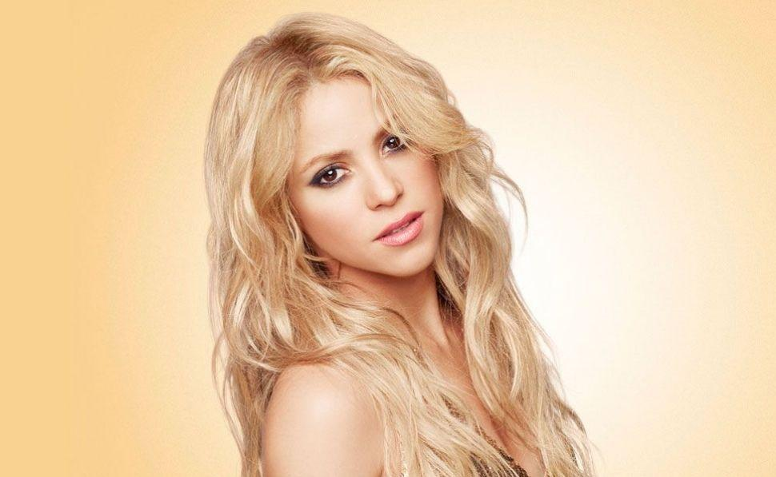
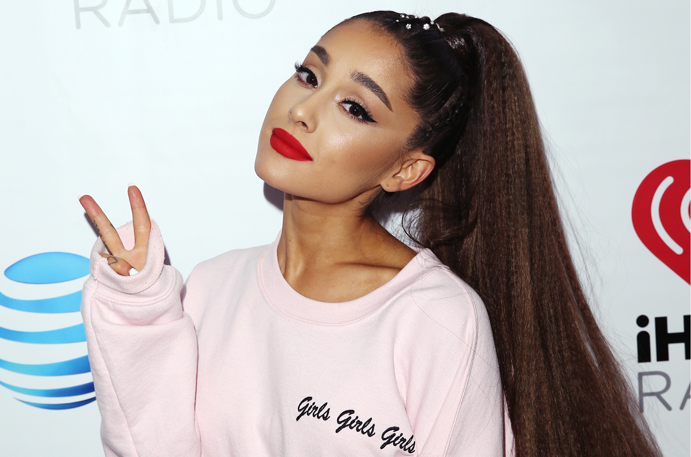

Aquí veremos los géneros musicales más escuchados hoy en día: el trap, el ragaeton, el pop y el rap.
POP
Es un género de música popular que tuvo su origen a finales de los años 1950 como una derivación del tradicional pop, en combinación con otros géneros musicales que estaban de moda en aquel momento. Cantantes: Ariana Grande (Thank u, next), Camila Cabello(Havana), Shakira (Waka Waka), Sia (Chandelier), Lady Gaga (Alejandro)…  RAP
El Rap es una forma musical que incorpora "rima, habla rítmica y jerga", que se interpreta o se canta en una variedad de formas, por lo general sobre un backbeat o acompañamiento musical. Los componentes del rap incluyen "contenido" (lo que se dice), "flow" (ritmo, rima) y "entrega" (cadencia, tono). El rap difiere de la poesía en que el rap generalmente se interpreta sobre una pista instrumental. Cantantes: Anier (Carnaza), Eminem (Rap God), Kase.O (Repartiendo arte), Ayax y Prox(Dama de la güadaña), Kaze (Cálmate)…TRAP
El trap es un subgénero musical que se originó en la década de 1990 , en el sur de los Estados Unidos El término trap (que significa trapiche) proviene del argot estadounidense para denominar el lugar donde se venden drogas ilegalmente o al hecho de venderla. Dicho término no tiene relación etimológica con el verbo trapear. A principios de los años 90's empezó con popularidad muy baja en estados unidos y él mundo, se originó en Atlanta, Georgia, donde nacieron raperos y grupos:- Three 6 Mafia
- Ghetto Mafia
- UGK
- Outkast
- Goodie Mob
RAGAETON
Reggaetón es un género musical bailable se deriva del reggae y el dancehall, así como elementos principalmente del hip hop y la música hispana.4 5 Se desarrolló por primera vez en Panamá en los años 1970 y llega a Puerto Rico en 1990; nace y surge a raíz de la popularidad del reggae en español, cuyos ritmos llegaron de Panamá, junto con el hip hop estadounidense durante los 1990.- Daddy Yankeey (Dura)
- Baby Rasta & Gringo (Amor Prohibido)
- Jbalvin(Mi gente)
- iFarruko(Besas tan bien)